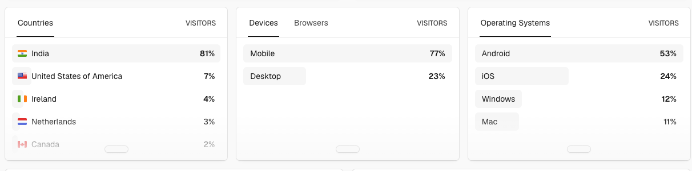

Production ownership
Operates OCI-based distributed systems, handles incident response, improves monitoring quality, independently troubleshoots complex issues, and builds recovery paths for failure scenarios.
Principal Engineer | Senior SRE | Kubernetes | Cloud Data & AI platforms
Kubestronaut Among 3,000+ CNCF-recognized Kubestronauts across 100+ countries Part of the 180 active Kubestronauts in IndiaPrincipal-level Site Reliability and Platform Engineer with 14+ years of experience building resilient Kubernetes, OCI, GCP, data-platform, and AI-ready systems where reliability, automation, observability, and cost discipline all matter.
Large-scale engineering fit
The profile is strongest for Principal Engineer, SRE, and platform roles that value ownership of production systems, measurable reliability improvements, data-platform scale, AI-ready infrastructure, independent problem solving, creative technical thinking, and pragmatic automation.
Operates OCI-based distributed systems, handles incident response, improves monitoring quality, independently troubleshoots complex issues, and builds recovery paths for failure scenarios.
Kubestronaut-certified engineer with CKA, CKAD, CKS, KCNA, and KCSA across Kubernetes administration, development, security, and cloud-native fundamentals.
Delivered $500K+ annual infrastructure savings through dynamic scaling, resource optimization, and automation-first platform operations.
Brings hands-on experience managing distributed systems such as Spark and Kafka-adjacent data platforms, plus AI-ready infrastructure, Linux, networking, security, and production debugging.
Proposes and implements practical solutions to complex reliability, scale, and operational challenges, turning recurring issues into automated guardrails.
What I make better
Defines observability strategy with Prometheus and Grafana, improves alerting signal quality, and reduces incident drag through proactive monitoring.
Architects Kubernetes-based infrastructure for distributed, data-intensive, and AI-adjacent workloads, combining scalable provisioning, failure validation, and automation-first operations for Spark and cloud data platforms.
Builds Python and Ansible recovery frameworks, auto-fixes vulnerable incidents, and eliminates repeated manual workflows from platform support.
Experience
From big data engineering to staff-level SRE work, the throughline is practical reliability: automate recovery, validate resilience, and make platforms easier to operate.
Leads reliability engineering and platform operations for OCI-based distributed systems handling large-scale data workloads.
Built delivery pipelines, automation frameworks, Hadoop operations, disaster recovery patterns, Kerberos security integration, and HBase upgrade work.
Developed Hive, Pig, Sqoop, and Oozie pipelines, optimized warehouse workloads, validated ETL migrations, and tuned Hadoop clusters.
GitHub
Full-stack Next.js App Router application with Tailwind CSS, regional election dashboards, live news sources, API proxy routes, and Vercel-friendly deployment.
Public deployment reached visitors across India, United States, Ireland, Netherlands, and Canada, with most traffic coming from mobile devices.
Top countries: India, United States, Ireland, Netherlands, and Canada.

Python HTTP API for public gist lookup with pagination, request logging, health and readiness endpoints, Prometheus-style metrics, rate limiting, Docker support, and safer response headers.
Spark and OCI resilience utilities covering long-running Spark workload tests, OCI Object Storage read/write flows, object downloads, and REST API helpers.
Technical depth
Kubestronaut with CKA, CKAD, CKS, KCNA, and KCSA. Also certified in OCI Architect Associate, OCI Foundations, and OCI AI foundations.
M.S. Software Engineering from BITS Pilani and B.Tech IT from Mepco Schlenk Engineering College.
{kind=link}